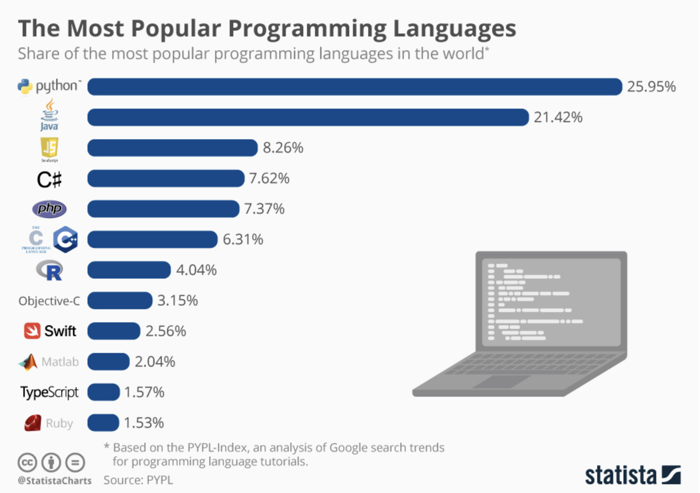

hello world!Introduction to Python - Day 1
Will Horne
Introductions
Who am I?
Will Horne. You can call me Will, or if you’d prefer, Dr. Horne is fine too!
I’m an assistant professor of Political Science at Clemson University.
- PhD (Princeton, 2022)
Substantive Interests: Parties, Representation, Class Politics, Polarization
Methods: Text-as-Data, Causal Inference
Who are you?
How to get in touch
Office: 4219 ISR
Office Hours: Daily, 10 AM – 12 PM, or by appointment
Email: rwhorne@clemson.edu or roberho@umich.edu
Zoom Link: On Canvas
Why should I learn Python?

Two of the biggest methods growth areas in political science right now — text-as-data and accessing large-scale web data — are dominated by python.
It’s also the most portable skill you can pick up in grad school if you end up outside academia.
Python: Strengths and Weaknesses
Strengths
Free and open source
Massive ecosystem of user-contributed packages
Leading language for ML and text-as-data
Weaknesses
Steeper learning curve than point-and-click software
Environment setup can be painful
Syntax is unforgiving (one missing colon and nothing runs)
Traditional stats packages still lean toward R
Goals of this course
This is not a programming class. The goal isn’t to become a Python programmer — it’s to introduce Python as a data analysis tool.
Foundations (Mon–Tue): syntax, data types, control flow
Tools (Wed): functions, modules, NumPy
Working with Data (Thu–Fri): pandas, APIs, scraping, text-as-data
Pre-Requisites
No prior coding experience required — this is a true beginner course.
That said, many of you have R or Stata experience. I’ll draw R analogies throughout (I’m an R user too); I can’t speak to Stata. If you’re already comfortable in R, the first day or two will feel slow, but we move faster from Wednesday on.
Materials
There are no required books for the course. However, I recommend the following (all free online):
Python for Data Analysis, Wes McKinney — wesmckinney.com/book
Introduction to Python Programming, OpenStax — openstax.org/details/books/introduction-python-programming
PyFlo: The Beginner’s Guide to Becoming a Python Coder — pyflo.net
You will also need a Google account to use Colab (free tier is fine). Or, you can install Python and Jupyter notebooks on your machine (more involved, will not cover in class).
Course Outline
Today: Intro and Coding Basics
Tomorrow: Basics Continued and Control Flow
Wednesday: Object Oriented Programming and Functions
Thursday: Data Analysis and APIs
Friday: Web Scraping and Text-as-Data
Where we’re going this week
By Friday, with the skills from this course, you should be able to:
Work with real data and reproduce a figure from a published article
Navigate a public API (e.g. congress.gov, the U.S. Census) and pull structured data into a pandas DataFrame
Scrape political news or party press releases from a static website
Run basic text analysis on a corpus of party manifestos or congressional speeches
Google Colab
Go to colab.google.com. Use your existing Google account, or create one for free.
Note - there are other (good) options, including IDEs like Spyder, Visual Studio Code, and Positron (Posit’s newer Python/R IDE — worth a look if you already use RStudio). You can also code Python directly in RStudio via the reticulate package.
Set Up
Once you have set up a colab account, try running the following line of code to make sure everything works
You can navigate between blocks of code, and blocks of text, similar to a markdown file.
What is computer code?
- Code
-
A series of clear and specific commands to perform or automate a task
How would you write a series of clear and specific commands to instruct someone to make a peanut butter and jelly sandwich?
Code For Computers
A set of instructions for a friend often assumes a lot of prior knowledge. I.e., my friend knows how to find peanut butter and take it out of the pantry.
Computers will do exactly what we tell them, and no more. They are not creative, and do not have intuition. So, we need to be very precise and detailed.
Begin in center of kitchen. Turn left 43 degrees. Move one meter south. Lift right arm. Open Cabinet Door. Etc….
AI assistants accept fuzzy English, but the interpreter underneath still reads every character literally. Understanding what the interpreter expects matters.
On Generative AI and Coding
AI assistants (Claude, ChatGPT, Copilot, Cursor) are very good at Python.
- So good that the failure mode has shifted. The risk used to be broken code. The risk now is working code you don’t understand.
When the AI is wrong, it’s usually wrong in plausible ways:
Hallucinated function names that don’t exist
Subtly wrong code
Analysis that runs cleanly but doesn’t answer your actual question
Working with AI Productively
You can’t catch these mistakes if you can’t read Python at a reasonable level.
- That’s the whole point of this course: build the foundation that lets you use AI tools as a force multiplier, not a black box.
This week, type the code yourself. Muscle memory matters more than you’d think.
If/when you use AI, treat its output the way you’d treat a function someone else wrote:
Read it before you run it.
Test on a small example first.
Ask it to explain its own output back to you — and check whether the explanation matches the code.
Python Basics
Python follows a clear syntax
- grammatical rules and formatting norms
Object-Oriented
- Almost everything in Python is an object — it has a type, and the type determines what you can do with it.
Basic Python Syntax
function(object) or object.method() ## do something to an object
object = “Hello World” ## create and save an object
print(object) ## apply a function to the object
Objects in Python
Objects are assigned a value with
=- Not
<-like in R
- Not
Objects have types.
- Different types of objects have different methods associated with them, and may have different behaviors
You can find the type of object in Python by applying the type function:
type(object)
Scalar (or primitive) Objects
inttype objects represent integers, e.g. 100, -5, 435floattype objects represent real numbers, e.g. 52.3 or -3.14159booltype objects (aka logicals) take on True or False (notice capitalization, different from R)strstrings represent characters/language, like “Bernie Sanders” or “House Resolution 1”
Type Conversions
objects of different types can be converted from one to another
- Be careful, can change the value of the object in unexpected ways!
Some objects cannot be converted, or can only be converted to a limited range of types
Conversion Examples
What happens?
Predict what each line returns before you run it.
What about converting a string to an int? Try it in Colab.
You Try
int and float are examples of functions. These specific functions convert between types, but it seems that int doesn’t perform exactly as you might expect.
In Colab, create an object called test and assign it a value of 5.6
Find the type of test
Instead of
int, tryround. Save the output as a new object. What value is stored, and what is its type?Repeat with 5.4
Note: round isn’t a type converter — it’s a rounding function that happens to return an int. We’re comparing it to int to show how their behaviors differ.
Operators
| Operator | What does it do? |
|---|---|
+ |
Addition |
- |
Subtraction |
* |
Multiplication |
/ |
Division |
% |
Modulus |
** |
Exponentiation |
// |
Floor division |
Once we get to pandas, these same operators work elementwise across whole columns of data.
Break
Let’s take a ~10 minute break, then we will come back and talk about how to use and combine objects.
Using Objects
- When you reference an object, Python returns its value.
Rebinding
We can rebind (or, redefine) a variable name to a different value. Everything that is run from that point forward in your script will use the new value.
Note - this can get really messy. People are often sloppy, forget they have redefined the object, etc. Just because we can, doesn’t mean we should.
What happens if you rebind r = 100 and then run the area script again?
You Try
In Google Colab
Create an object called
inchand assign it some value.Create an object called
metricand assign it a value of 2.54.Write an expression called
cmthat convertsinchto centimeters.
Heads-up: don’t name a variable in — that’s a reserved keyword in Python.
Let’s Talk About Strings
Strings are Python’s text data type — anything you’d write in quotes.
We’ll spend extra time on strings. NLP/text-as-data methods are some of the biggest applications of Python in political science.
Assigning Values to Strings
We can assign strings values by wrapping a series of characters in single or double quotation marks
- Triple quotation marks indicate a special type of string, a multi-line string
More Examples
name = "Will"
email = "rwhorne@umich.edu"
print(name + " can be reached at " + email) ## Notice the spacingWill can be reached at rwhorne@umich.eduWe can’t add strings and integers together
--------------------------------------------------------------------------- TypeError Traceback (most recent call last) Cell In[8], line 3 1 height = 72 ----> 3 print("Will is " + height + " inches tall") TypeError: can only concatenate str (not "int") to str
Our first error message! Notice that it identifies where the error occurs, and gives an explanation.
You will see many error messages over the course of this week — that’s normal, not a sign you’re doing something wrong. Read them. They tell you exactly which line broke and usually what went wrong.
Strings and Numbers
Of course, we want to be able to include numbers in our strings. If we can’t add/concatenate strings and integers (or floats), what can we do?
We can put quotes around the numeric value to ensure python treats them as strings.
Indexing
Strings are made up of characters. You can pull out an individual character by its position.
Indexing and Concatenation
We can do all sorts of things with string indexing. For example, we can make new strings.
Take a minute to create a word of your own, and save it as new_word
Negative Indexing
Negative indexing starts at the end. The last character is -1 (not -0), the second-to-last is -2, and so on.
You Try
Assign “July 6, 2026” to Date.
Use string indexing to extract the year from the string, and save the year as a new object, Year.
Solutions
Positive Indexing
A More Elegant Solution
There’s almost always a better way. The Python idiom for “the last four characters” is slicing, which we’ll properly introduce tomorrow:
This is what you’d actually write.
F strings
f, or formatted, strings, are a convenient way to embed python objects inside of strings. The syntax is triggered by f" or F" and the object(s) are embedded in brackets {object}.
F String Example
This is most useful when we are working with more complex data structures. We will see several examples throughout the course.
Boolean Logic
Booleans might be the simplest data type in Python
- Take on values of True or False
Boolean Expressions are expressions that result in boolean, rather than numeric, values
- Check for equivalence with ==
Comparison Operators
| Operator | What does it do? |
|---|---|
A < B |
Checks if A is less than B |
A <= B |
Checks if A is less than or equal to B |
A > B |
Checks if A is greater than B |
A >= B |
Checks if A is greater than or equal to B |
A == B |
Checks if A is equal to B |
A != B |
Checks if A is not equal to B |
Examples
Type Conversion with bool()
bool() converts any value to a boolean
True: any non-zero number, any non empty-string
False: 0, empty string
Can convert from Boolean to int or string
True = 1, False = 0.
str() will return the boolean as a string
If Statements
Imagine you are headed to work. As you get ready to leave, you check the forecast…
If there is a greater than 50% chance of rain, you take an umbrella. (This logic might explain why I always find myself caught without one).
Else, you just head out the door.
If Statements Graphically

If the condition is True, do B. Else proceed to C.
Example
chance_of_rain = 0.62
if chance_of_rain > 0.5:
print("Take an umbrella!")
else:
print("Leave it at home.")Take an umbrella!Notice the syntax.
if condition :
code (indented 4 spaces by convention)
else runs whenever the if condition is False. We’ll do more with else and elif tomorrow.
One Use Case: Taking User Input
- One way we can use boolean logic is to check whether user input meets some criteria.
- We can do this with the
inputfunction, which prompts a user for input- Input automatically records input as a string, but we can coerce it to other types if we want.
Note - I can’t enter input in markdown slides, so let’s check out how this works in colab
Another Example
How could we write a script that checks whether the user has enough money to make a 20% down payment on a house?
Note that we can make these conditionals a lot more complex, so that they can handle many different conditions. This will turn out to be very useful. More on this tomorrow!
Your Turn
I’m a fan of the 80s/90s alt rock band the Cure, who are probably best known for their hit song “Friday I’m in Love”.
Write a program that asks the user for the day of the week. If they enter Friday, it should print(“It’s Friday, I’m in Love”), and otherwise it shouldn’t print anything.
Wrapping Up
Tomorrow — Loops, More Complex Data Types, Functions
Questions: come to office hours, in person or via Zoom — link is on Canvas
Reading (recommended, not required): OpenStax Introduction to Python Programming, Chapters 1–3
Slides will be posted after each lecture on Canvas and at will-horne.github.io/icpsr-2026
Comments
Anything after
#on a line is a comment — Python ignores it. Use comments to explain what your code does (to your future self, mostly).